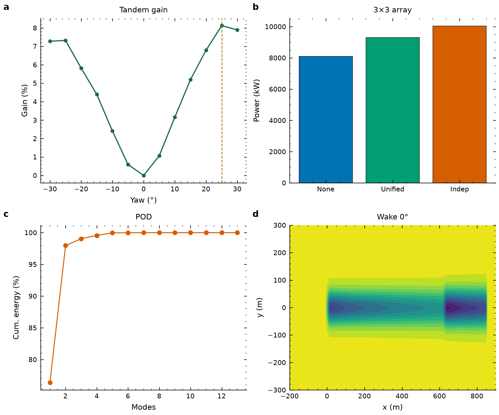

双机偏航最大增益
+8.13%
上游 +25° 最优偏航工况
2190 → 2368 kW
九机阵列独立偏航增益
+24.04%
贪心 [30°, 20°, 0°] 梯级协同
8095 → 10041 kW
代理模型拟合决定系数
> 0.9999
MAE < 10.5 kW · 推理 < 0.8 ms
队友交付图源 · 仓内脚本待补
前 2 阶模态能量覆盖
98.0%
Mode 0 76.4% + Mode 1 21.6%
流场评估提速超 1000×
NATURE FIG · 01系统总览主图 — 4面板综合 Tandem gain + Array + POD + Wake

Nature主刊Figure 1候选：a Tandem偏航增益，b 阵列总功率三策略，c POD累积能量，d Wake 0°流场。单栏3.5in/双栏7.2in最终尺寸，矢量PDF → PDF
STAGE 1 / PHYSICS
物理流场建模
FLORIS 4.6.6 GCH 工程尾流模型，3D 尾流偏转与速度亏损模拟。
STAGE 2 / ROM
降阶与代理建模
POD 本征正交分解 + XGBoost 高精度代理模型，毫秒级功率预测。
STAGE 3 / OPTIMIZE
协同优化求解
SLSQP 连续寻优 / 贪心独立偏航，全风速工况 γ* 序列求解。
STAGE 4 / DELIVERY
交互可视化模块
3D 风电场、闭环看板与答辩交互系统，孙承泽负责（本系统）。
十六个可视化模块目录
纯静态边缘渲染，全部模块可在无后端环境直接打开；编号 00–03 为组会主讲主线，其余为支撑与扩展模块。
MOD 00主线
平台首页
数字孪生视口与项目全景入口
MOD 01主线
尾流交互分析
两机对流响应与偏航滑块实解
MOD 02主线
优化对齐验证
多风速最优偏航角与前后对比
MOD 03主线
实时求解对比
代理模型 vs FLORIS+SLSQP 测速
MOD 04闭环
Master Dashboard
数据–物理–控制闭环总控看板
MOD 05协同
3×3 阵列优化
九机四策略协同偏航切换对比
MOD 06数据
热力矩阵
偏航 × 风速增益矩阵与 3D 曲面
MOD 07数据
风玫瑰与 AEP
12 风向实扫描与年发电量折算
MOD 08降阶
POD 降阶分析
模态能量分解与毫秒级重构
MOD 09验证
模型精度验证
代理模型 R² / MAE 与架构对比
MOD 10控制
功率需求跟踪
AGC 目标功率逆向偏航求解
MOD 113D
3D 风电场
Three.js 九机协同与真实流场
MOD 123D
3D 尾流曲面
三维速度曲面与高度切片探针
MOD 133D
3D 体渲染
尾流低速泡等直面与偏航扫描
MOD 14协作
数据接口契约
团队交付链路与 API 规范固化
MOD 15演示
气动流线演示
势流避障与计算网格交互引擎
FIG. A全风速工况基准总功率分布 (6 / 8 / 10 / 12 m/s)
展示未偏航基准工况下全场总功率随风速的非线性增长特征，8 m/s 为额定优化参考工况。
FIG. B额定风速 (8 m/s) 下 P₁ / P₂ 功率分解与让利趋势
上游 P₁ 功率随偏航单调下降（主动让利），下游 P₂ 随偏航显著回升，总功率在 +25° 达峰。
LEDGER双机全工况功率响应数据集 (8 m/s, cases_multi)
逐偏航角 P₁ / P₂ / 总功率与相对增益，高亮行为推荐最优与 0° 基准。
| 偏航角 γ₁ | 上游功率 P₁ (kW) | 下游功率 P₂ (kW) | 全场总功率 Ptot (kW) | 相对 0° 增益 | 工况状态 |
|---|